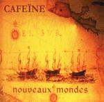

| Artist: | Cafeïne |
| Title: | Nouveaux Mondes |
| Label: | Musea |
| Length(s): | 67 minutes |
| Year(s) of release: | 2000 |
| Month of review: | [02/2001] |
| 1) | Hubble | 7.06 |
| 3) | Voler En Eclats | 8.11 |
| 5) | Don Juan | 8.19 |
| 7) | Alexandre | 9.51 |
| 8) | My Only Quest | 4.35 |
| 9) | Cathédrale | 10.44 |
L'Or Des Indes is a vocal track with a wailing guitar, rolling drums and the bass responsible for the bouncy gait of the track. The vocals are at times in the typical dramatic French style and the chorus on the other hand is quite catchy. The keyboard solo in the middle is a nice one, fast and appealling. Then the band takes a little rest with only the rhythm section holding on, and the rest of the band interjecting a shard of music here and there. The music now seems to picture a kind of brewing thunderstorm. The song is not over yet, because we then move into a choral part, that however seems a bit too short, would have been nicer to build on that. The piano takes over before the chorus returns. The guitar solo is in jazz rock style and I am afraid it takes a bit too long now, too many changes and too little sense they are making. Too bad, because there were some nice ideas in there.
Voler en Eclats opens with a strong moody atmosphere, but the wailing Floydian guitar quickly makes its entrance. I however am not too happy about the poppy vocal part. The harmonies do not sound clean enough. Maybe it is because of the singer of Galaad, but there are some folky influences here as well. During some parts the song tries groove, but it simply does not work for me. The abrupt changes in the music do not help either. I still like the drumming and the sharp sounding guitarwork.
The same singer sings on Les Conquérants which is a nice melodic track with a good vocal melody, acoustic guitar and a small wind orchestra. A bit on the slow side, but nice fairy-tale like music with tasteful piano. Within its short span, the music does have its outburst, becoming a kind of plodding progressive, but the melody stays intact.
Don Juan opens with jazzrockish guitar and harpsichord. The guitar sound reminds me a bit of Hackett on some of his solo albums, spaceous. The intro introduces quite a number of aspects to the song, and again it seems the band is going to loose themselves into too much variation. On this track we here the dramatic vocals of Christian Descamps of Ange with strong chords on the rhythm guitar, alternated with light classically styled wind instruments. At times the music becomes more pacey with some rather tiring breaks to wind back down to the easy-going gait of the vocal part. The whispering voice of Descamps introduces a new part of the song. It is followed by a nice slow build-up to crescendo. Then the music kind of disappears.
Atomik is the sixth track opening with shards of music and then finally the music rings out fully. Again, the music is in a jazzrock style with varied drumming and a typical jazrock guitar sound. The vocalist is a woman this time, Julie Vander of Magma in fact. The vocals are wordless, and support this melodic track. Halfway there are some typical Spocks Beard escapades, but afterwards the music becomes more anthemic and on the whole this actually an appetizing track, with the now already well-known "variety" in the tracks, but it does work out well here with some nice piano at the end.
Alexandre has good vocals and nice melodies sung by Cyril Grimaud. The song is rather playful on the whole with a majestic sounding chorus. The guitarwork is rather sharp reminiscent of Hackett on his own work (Spectral Mornings). In this song it seems the band takes more time to let the elements in the music develop and this makes for a less nervous and more focused kind of progressive, but there is still time for a grand finale on guitar. Very good.
My Only Quest opens softly with cosmic keyboards, which is followed by a slow moving balladic piece with a very good build-up and strong melodies. The guitar part reminds me of the guitar part at the end of IQ's Common Ground. Also an imposing, somewhat military sounding guitar solo, coming out of nowhere.
I hope the pause between My Only Quest and the final track Cathédrale does not end up on the final Musea pressing, because this can not be how it is supposed to be. The two vocalists of Minimum Vital do not take the lead very often on this longish track. Plenty of instrumental parts hence, some of which have a kind of Carribean feel, and in contrast are alternated with the typical guitar work of the band. Almost halfway, the acoustic guitar takes over and the music becomes friendly and folky. Later on the flute sets in and the music becomes a bit more melodic, but continues to be folky. After some flowing wordless vocals the music becomes a bit more disjointed and it seems the band is gathering itself for a final effort, but to my surprise the music does not really break loose.